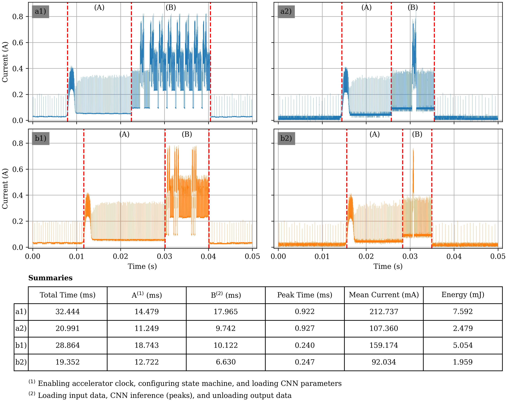

Education
University College Cork
Cork, Ireland May 2022 ‑ Current
MSc ‑ Electrical and Electronics Engineering
Technical University of Munich
Munich, Germany Oct 2019 ‑ Apr 2020
Exchange Student
Hanoi University of Science and Technology
Hanoi, Vietnam Oct 2015 ‑ Aug 2020
Engineer ‑ Control Engineering and Automation
Work Experience
Vietnam – Korea Institute of Science and Technology
Hanoi, Vietnam Aug 2021 ‑ Apr 2022
Research Engineer
Viettel High Technology Industries Corporation
Hanoi, Vietnam Nov 2020 ‑ Aug 2021
Embedded Software Engineer
Projects
Omnidirectional Robot Prototype Development
DESCRIPTION
Developing an omnidirectional robot prototype for research and development of a navigation system for field robots.
CONTRIBUTIONS
I designed the electrical system, safety management system, actuator control software, and graphical user interface.
- Actuator Control Software
- Graphical User Interface
- Safety Management System
I designed and developed a software to control BLDC motor drivers, which control the robot wheels. Control and query commands are sent to motor driver via an UART communication port. The main language used was C/C++ with Robot Operating System (ROS).
Source code: here
I designed and developed robot Graphical User Interface (GUI) using Qt Creator software. This GUI allows users to control the movement of the robot via a software joystick, displays robot's data and status. The main language used was C/C++ with Qt Creator and Robot Operating System (ROS).
Source code: here
I designed a safety mechanism using a PLC and software to control the operation of the robot. The development of this system involving PLC programing and C/C++ with ROS.
Source code: here
Real-time, AI-assisted Sonification Algorithm for Neonatal EEG
DESCRIPTION
This study presents a real-time processing design of the AI-assisted EEG sonification algorithm in [16] and its implementation on an ultra-low power microcontroller. Two patient-independent seizure detection neural networks were evaluated for their performance and power consumption on the microcontroller’s dedicated neural network accelerator. The real-time design allows for continuous availability of audio, saving time and effort for medical staff and enabling seizure detection as early as it occurs. The ultra-low power application can be used in clinical settings, such as Neonatal Intensive Care Units, for continuous EEG analysis. It is suitable for wearable devices.
The original algorithm had been re-designed in architecture along with some of its parts to process real-time data. The new architecture also needs to be high-speed and memory efficient, suitable for running on a resource-constrained platform. Taking advantage of a multithreading design, this architecture enables the processor to perform all digital signal processing tasks concurrently while retrieving the classification outputs of the seizure detection algorithm.
- Original AI-assited Sonification Algorithm
- Real-Time Adaptation
A novel method of AI-driven spatial neonatal EEG sonification has been presented in [1]. It utilizes the Phase Vocoder (PV) algorithm with an AI-guided time-compression factor as an attention mechanism. The AI probabilities are used to modulate the audio playback speed, maintaining focus on the EEG regions with a high probability of seizures, while allowing quick audio rendering over non-seizure EEG segments. This method combines the accuracy and speed of AI algorithms with the interpretability and intuitiveness of sonification, it enables a quick, accurate, and interpretable seizure detection method while requiring little to no training from medical workers.

This study presents a real-time adaptation of the AI-assisted EEG sonification algorithm and its implementation on an ultra-low power embedded system. A significant advantage of a real-time implementation is that the output audio is always available for listening. Medical workers can have access to real-time audio at any time without having to periodically restart the sonification algorithm, enabling seizure detection as soon as they occur. This ultra-low-power implementation is suitable for wearable devices, which can be widely adopted in clinical settings, including Intensive Care Units, for continuous neonatal EEG monitoring.

Listen to EEG
The real-time (online) algorithm implemented with C/C++ is validated against the original design which implemented on Matlab. This website provideds a more interactive comparision between the two algorithm designs: Listen to EEG
Neural Networks Quantization and Validation
Two patient-independent seizure detection neural networks were implemented in this low-power application and compared in performance: A Fully Convolutional Neural Network (FCNN) contains three feature extraction blocks and a fully convolutional classification block, referred to as the VGGNet in this study [3]; and an improved Residual Network (ResNet) with total of 13 convolution layers in 4 feature extraction blocks [4].
Table I summarizes the performances of the ResNet and the VGGNet in both floating-point and integer formats. The ResNet model outperforms the VGGNet model in both floating-point and 8bit integers representations by 2.6% and 3% respectively.
| Model | Number of Parameters | Size (bytes) | AUC (%) | MAX78002 Inference Time (us) |
|---|---|---|---|---|
| ResNet 32b | 45,090 | 180,360 | 98.0 | - |
| ResNet 8b | 45,090 | 45,090 | 97.6 | 937 |
| VGG 32b | 25,538 | 102,152 | 95.4 | - |
| VGG 8b | 25,538 | 25,538 | 94.6 | 248 |
Implementation Results
The Real-time AI-assited Algorithm was implemented on MAX78002, a new breed of AI microcontrollers designed for running neural networks with ultra-low power consumption. It features an Arm Cortex-M4 with FPU CPU and an ultra-low-power deep neural network accelerator.
The power consumptions of two neural networks on the MAX78002 were measured by tracking the input current of net VCOREA which drives the CNN core on the MAX78002. The voltage drop at jumper JP4 with a preinstalled 10mΩ shunt resister on the development kit was measured using a 500x amplifier and an oscilloscope. Fig 3 shows the current values derived from the measured voltage drop. With VCOREA is 1.1V, the total energy was also calculated.
While Fig 3a1 and b1 detail the power signatures of two models in the sonification algorithm processing 8 channels EEG, a2 and b2 detail the power signatures processing a single input image. Three separated events marked in the figures are: CNN clock enabled, CNN starts, and CNN clock disabled. These events divide the total CNN operation period into two stages A and B. During stage A, first the accelerator is brought into a consistent state, next, kernels (weights) and biases are loaded, and finally the neural network’s architecture is configured. Stage B is when the input data being loaded, inference (peak), and output data being unloaded.
Fig. 3. Neural Networks’ Power Signatures on MAX78002
REFERENCES
[1] S. Gomez-Quintana, A. O’Shea, A. Factor, E. Popovici, and A. Temko, “A method for AI assisted human interpretation of neonatal EEG,” Sci Rep, vol. 12, no. 1, p. 10932, 2022, doi: 10.1038/s41598-022-14894-4.
[2] N. Stevenson, K. Tapani, L. Lauronen, and S. Vanhatalo, “A dataset of neonatal EEG recordings with seizures annotations,” Jun. 2018, doi: 10.5281/ZENODO.2547147.
[3] A. O’Shea, G. Lightbody, G. Boylan, and A. Temko, “Neonatal seizure detection from raw multi-channel EEG using a fully convolutional architecture,” Neural Networks, vol. 123, 2020, doi: 10.1016/j.neunet.2019.11.023.
[4] A. Daly, A. O’Shea, G. Lightbody, and A. Temko, “Towards Deeper Neural Networks for Neonatal Seizure Detection,” in 2021 43rd Annual International Conference of the IEEE Engineering in Medicine & Biology Society (EMBC), 2021, pp. 920–923. doi: 10.1109/EMBC46164.2021.9629485.
Publications
T. Van Nguyen, A. Daly, F. O’Sullivan, S. G. Quintana, A. Temko and E. Popovici, "A real-time and ultra-low power implementation of an AI-assisted sonification algorithm for neonatal EEG," 2023 9th International Workshop on Advances in Sensors and Interfaces (IWASI), Monopoli (Bari), Italy, 2023, pp. 313-318, doi: 10.1109/IWASI58316.2023.10164463.